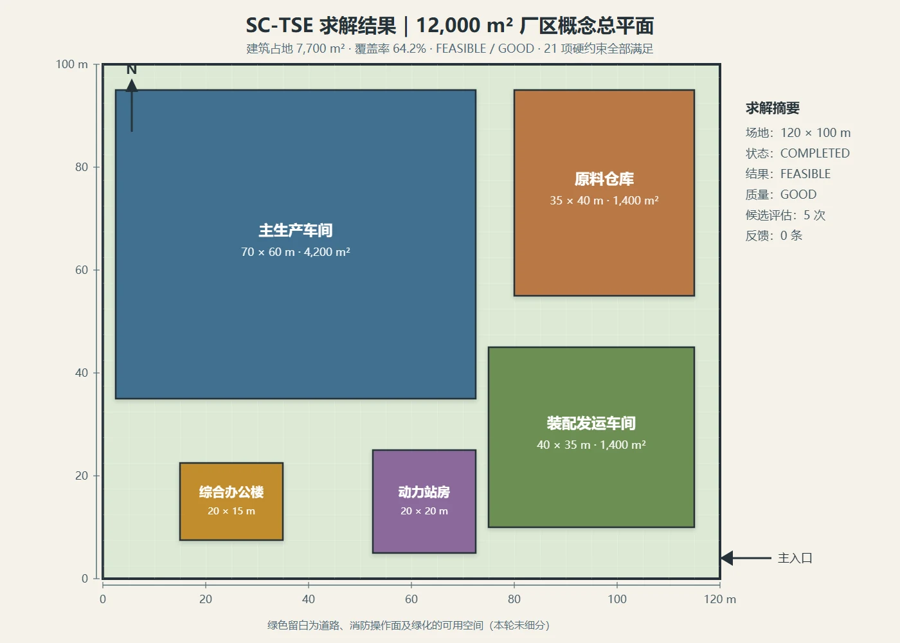
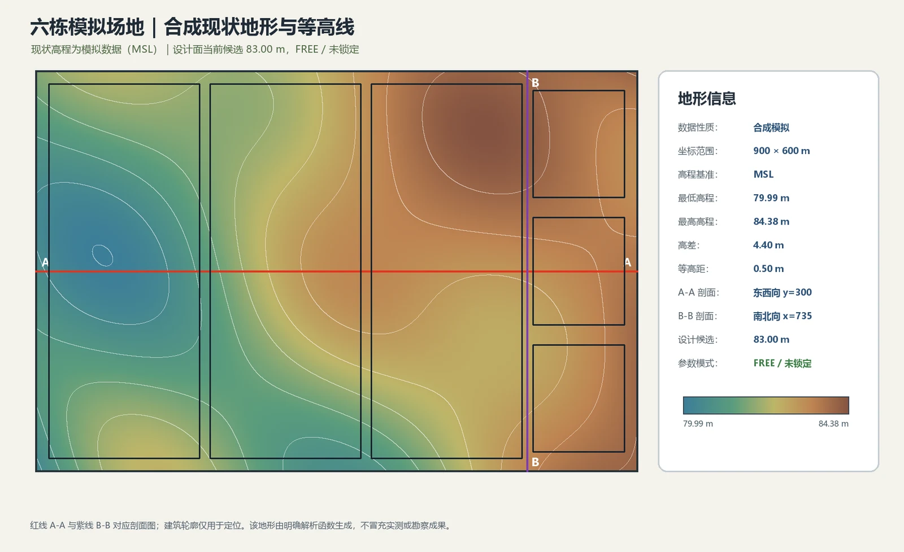
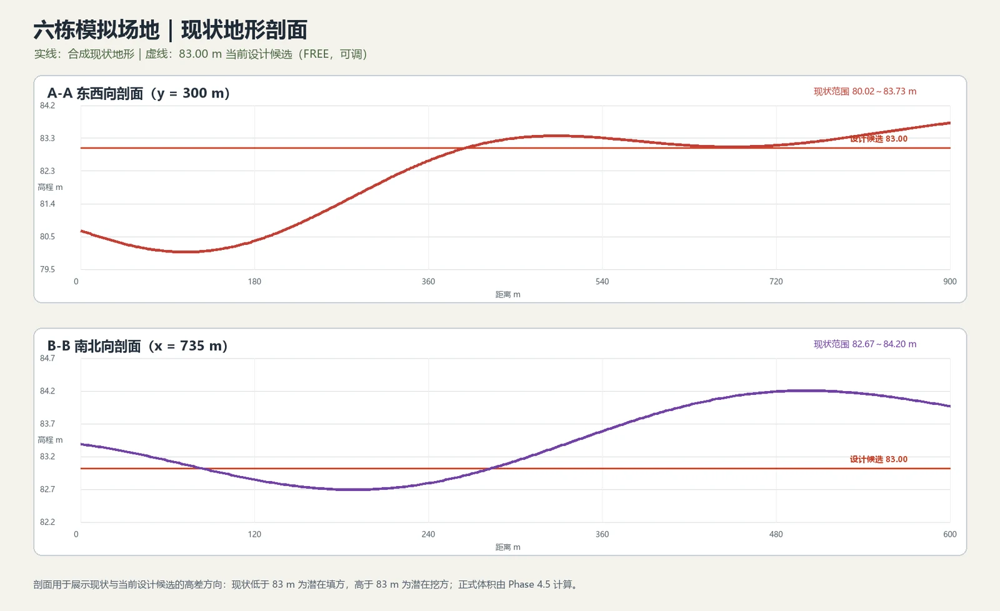
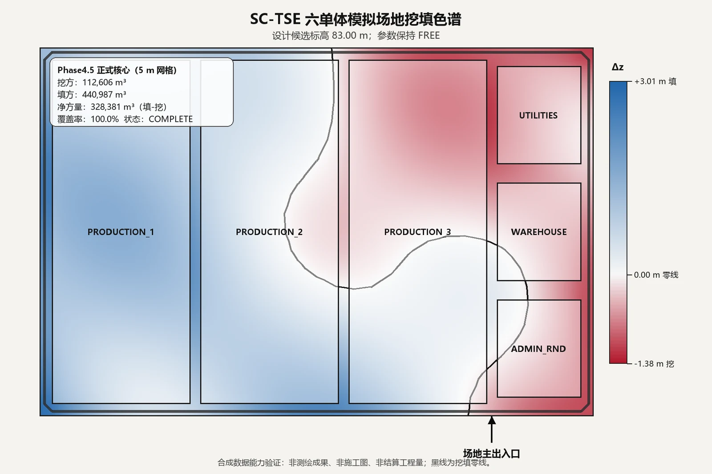
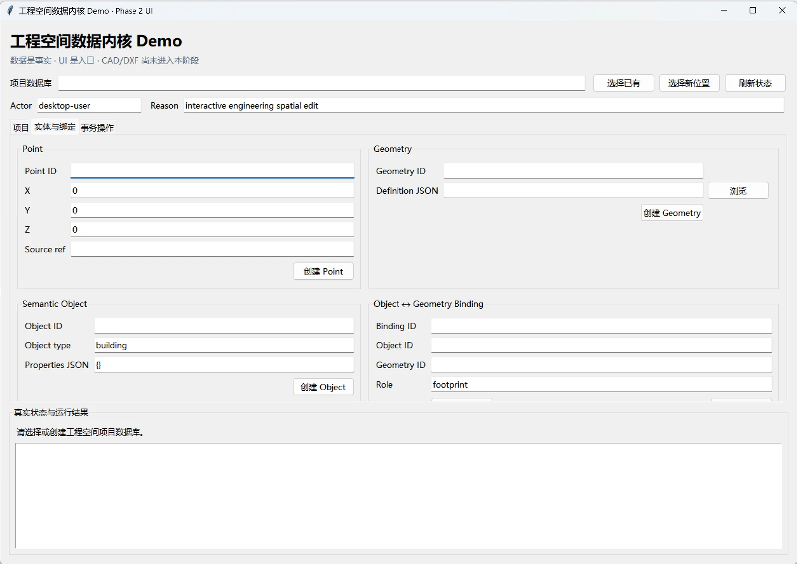
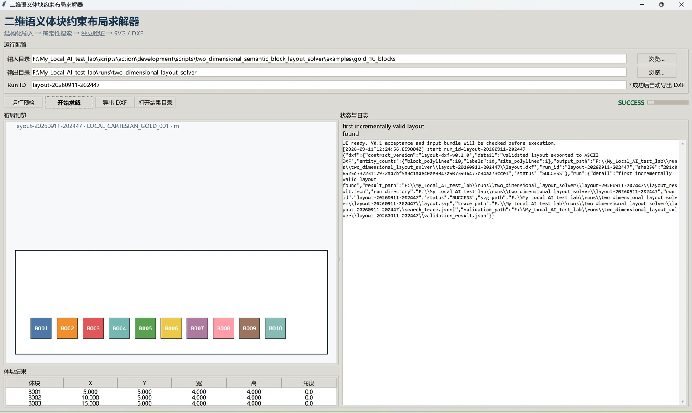

02 / SPATIAL COMPUTATION
SC-TSE
把空间约束，变成可计算的证据。Spatial constraints,
made computable.

一个布局“看起来可行”，是否真的满足约束？A layout looks feasible. Does it satisfy the constraints?
几何结果需要与计算过程和约束依据同时呈现。只展示最终图形，无法解释哪里通过、哪里受阻，以及为什么。Geometry needs to be accompanied by its computation and constraint evidence. A final drawing alone cannot explain what passed, what failed or why.
工程方法Engineering approach
将结构化场地、体块和约束接入六节点计算主链，返回运行状态、关键指标与具体违规证据。Connect structured sites, blocks and constraints to a six-node computation chain, returning run state, key metrics and specific violation evidence.
已经实现与验证Implemented and demonstrated
公开 Integration MVP 支持固定矩形体块的编辑、重新计算和校验。下方地形、剖面、挖填方和自动布局图像来自更广泛的研发实验。The public integration MVP supports editing, recalculating and validating fixed rectangular blocks. Terrain, sections, earthwork and automatic-layout images below come from broader research experiments.
继续探索Still in exploration
更广泛的工程计算方向通过原型验证；公开版本以仓库说明和测试为准。Broader engineering directions are explored through prototypes. The repository documentation and tests define the public version.









